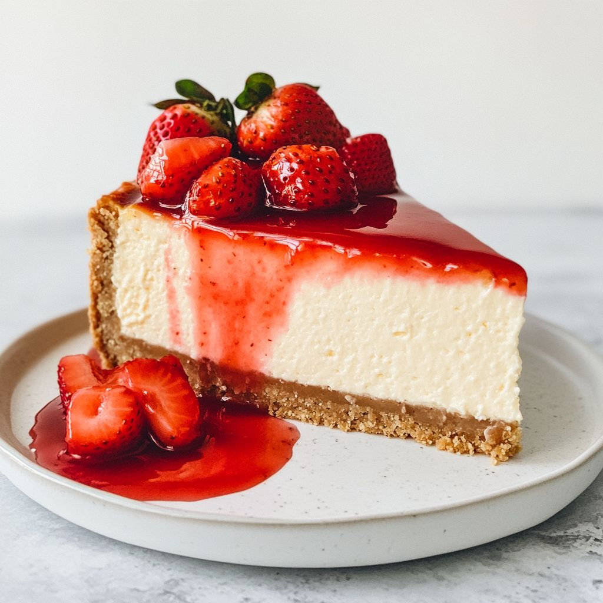

Cheesecake Recipe
Home

Description
This cheesecake recipe is our best recipe for cheesecake with a rich and creamy
texture and cherry topping for an indulgent dessert that is also easy to make!
It is the perfect dessert to serve at your next party.
Ingredients
- Graham cracker crumbs
- Butter
- Sugar
- Cream Cheese
- Sour Cream
- Vanilla
- Eggs
- Pie filling (optional)
Steps
- Make the crust and press it into a springform pan.
- Make the filling, then pour it over the crust.
- Bake the cheesecake until the filling is almost set.
- Run a knife around the rim to loosen the sides and allow it to cool.
- Remove the cheesecake from the pan and chill before serving.